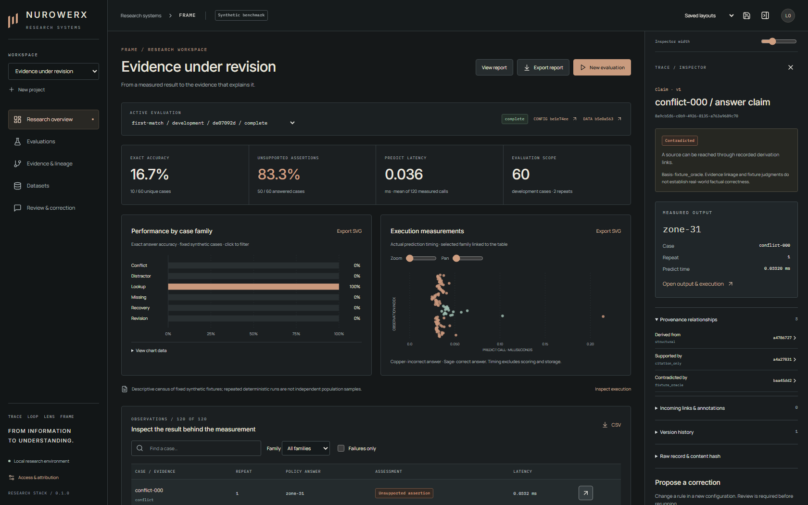

TRACE · LOOP · LENS · FRAME
From information
to understanding.
Follow a measured result back to its evidence. Research Stack connects versioned provenance, computational evaluation, scientific visualization and review.
Read-only research demonstration. This page displays exported synthetic experiment results. It does not run the backend, accept corrections or evaluate a live AI model. Install the complete application to use those workflows.
Controlled evaluation
First-match · development60 unique cases
Reviewed correction · full split60 unique cases
Evidence-aware · development60 unique cases
| Configuration / scope | Correct cases | Accuracy | Evidence |
|---|
The affected-case score uses one selected failure. It is not a full-split estimate. Repeat calls and seeds are not independent population samples; no accuracy confidence intervals are inferred.
Inspect the actual workspace

Evidence, methods and reuse
The complete release includes a reproducible benchmark suite, original versioned datasets, raw reports and three technical manuscripts.
Release downloads · Technical reports
Dataset manifest · Validation evidence
These are technical validation results, not a human-user study, real-model benchmark or independent-party replication.
Experiment source commit: